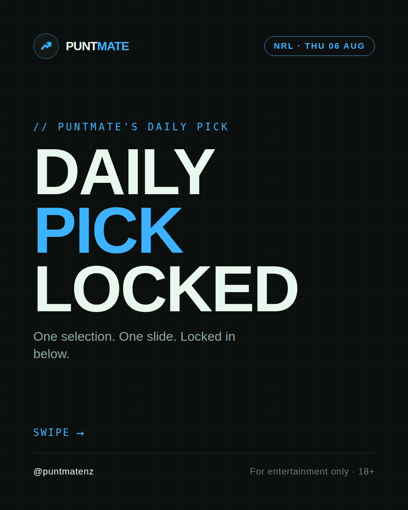
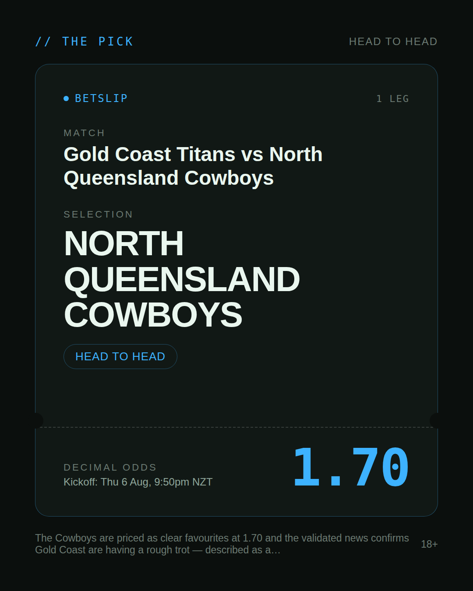
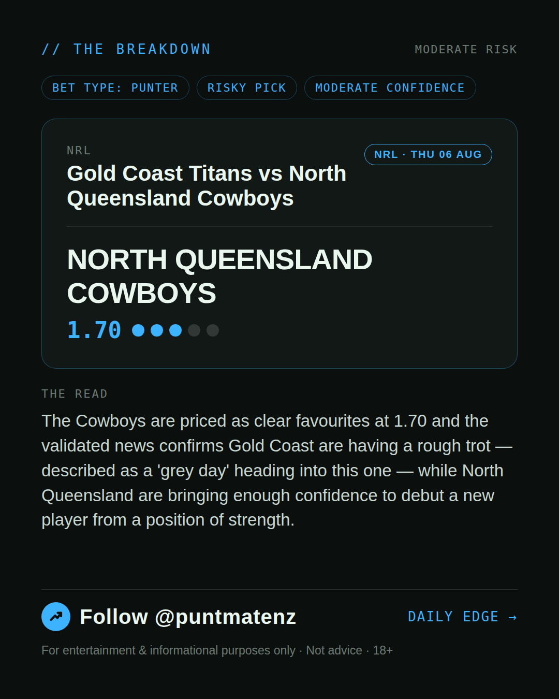
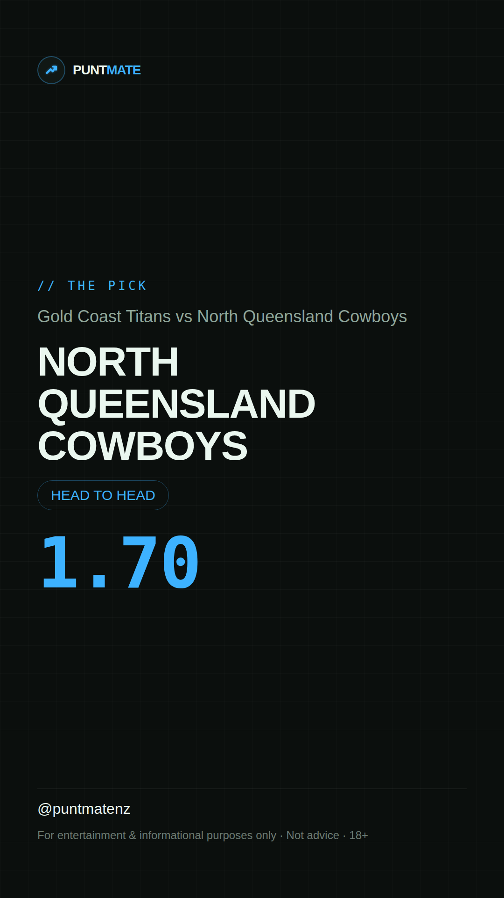

*🎯 PUNTMATE NZ — NRL* 🏟 Gold Coast Titans vs North Queensland Cowboys *PICK:* NORTH QUEENSLAND COWBOYS *ODDS:* 1.70 (Head to Head) *BET TYPE: PUNTER* _The Cowboys are priced as clear favourites at 1.70 and the validated news confirms Gold Coast are having a rough trot — described as a 'grey day' heading into this one — while North Queensland are bringing enough confidence to debut a new player from a position of strength._ ────────────────── 📲 Join Telegram for daily picks ⚠️ For entertainment & informational purposes only. Not advice. 18+.
🎯 NRL — Gold Coast Titans vs North Queensland Cowboys NORTH QUEENSLAND COWBOYS @ 1.70 (Head to Head) BET TYPE: PUNTER Solid touch here. Not a lock, but the value's real and the form backs it up. The Cowboys are priced as clear favourites at 1.70 and the validated news confirms Gold Coast are having a rough trot — described as a 'grey day' heading into this one — while North Queensland are bringing enough confidence to debut a new player from a position of strength. Follow for daily value picks → @puntmatenz ⚠️ For entertainment & informational purposes only. Not advice. 18+. #PuntmateNZ #SportsBetting #NZTAB #NRL
| has_pick | True |
| pick_id | 2026-08-05_Gold_Coast_Titans_vs_North_Queensland_Cowboys |
| run_id | 31047985237 |
| generated_at | 2026-08-05T21:19:41.616805+00:00 |
| post_date | 2026-08-05 |
| match | Gold Coast Titans vs North Queensland Cowboys |
| sport | rugbyleague_nrl |
| sport_label | NRL |
| market | Head to Head |
| selection | NORTH QUEENSLAND COWBOYS |
| odds | 1.70 |
| bet_type | PUNTER_BET |
| bet_type_label | BET TYPE: PUNTER |
| bet_type_reason | Solid touch here. Not a lock, but the value's real and the form backs it up. The Cowboys are priced as clear favourites at 1.70 and the validated news confirms Gold Coast are having a rough trot — described as a 'grey day' heading into this one — while North Queensland are bringing enough confidence to debut a new player from a position of strength. |
| classification | RISKY_PICK |
| risk | RISKY_PICK |
| confidence | MODERATE |
| confidence_label | MODERATE |
| final_explanation | The Cowboys are priced as clear favourites at 1.70 and the validated news confirms Gold Coast are having a rough trot — described as a 'grey day' heading into this one — while North Queensland are bringing enough confidence to debut a new player from a position of strength. |
| public_caution | Keep this one light — the value's there but so is the uncertainty. |
| theme | night |
| carousel_paths | ['data/review/2026-08-05_Gold_Coast_Titans_vs_North_Queensland_Cowboys/cover.png', 'data/review/2026-08-05_Gold_Coast_Titans_vs_North_Queensland_Cowboys/tip.png', 'data/review/2026-08-05_Gold_Coast_Titans_vs_North_Queensland_Cowboys/breakdown.png'] |
| carousel_urls | ['https://raw.githubusercontent.com/kingofthecastle24/puntmate/main/data/cards/2026-08-05_Gold_Coast_Titans_vs_North_Queensland_Cowboys_night_1_cover.png', 'https://raw.githubusercontent.com/kingofthecastle24/puntmate/main/data/cards/2026-08-05_Gold_Coast_Titans_vs_North_Queensland_Cowboys_night_2_tip.png', 'https://raw.githubusercontent.com/kingofthecastle24/puntmate/main/data/cards/2026-08-05_Gold_Coast_Titans_vs_North_Queensland_Cowboys_night_3_breakdown.png'] |
| story_path | data/review/2026-08-05_Gold_Coast_Titans_vs_North_Queensland_Cowboys/story.png |
| story_url | https://raw.githubusercontent.com/kingofthecastle24/puntmate/main/data/cards/2026-08-05_Gold_Coast_Titans_vs_North_Queensland_Cowboys_night_story.png |
| intended_platforms | ['telegram', 'instagram_feed', 'instagram_story', 'facebook'] |
| workflow_state | GENERATED |
| has_punter_multi | False |
| has_gambler_multi | False |
| has_degenerate_multi | False |